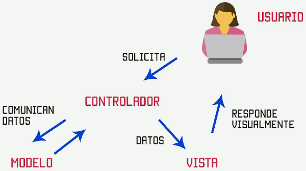

Los archivos que cotienen código fuente son documentos de texto plano, por lo que cualquier editor de texto plano puede servirnos para escribir un programa.
Pero escribir un programa no es solo escribir el código fuente, sino que requiere de otros procesos como compilación/interpretación, depuración, solución de errores, mejora de eficiencia, banco de pruebas, mantenimiento, control de versiones, etc. Así, hoy en día, a nivel profesional, nadie programa con un editor de texto plano, sino que utilizan distintas herramientas para la creación de software.
Hoy en día existen multitud de herramientas para la ayuda a la generación de software cada día aparecen nuevas que nos permiten adaptarnos a las nuevas exigencias del mercado:
- Git: sistema de control de versiones distribuido que permite a los desarrolladores realizar un seguimiento y administrar cambios en el código fuente.
- Docker: plataforma de virtualización basada en contenedores que permite a los desarrolladores empaquetar, distribuir y ejecutar aplicaciones de manera uniforme y eficiente en diferentes entornos y plataformas.
- Postman: herramienta de colaboración y desarrollo de API que permite a los desarrolladores diseñar, probar y documentar APIs de manera eficiente.
- Jira: herramienta de seguimiento de problemas y gestión de proyectos ampliamente utilizada en la industria del desarrollo de software. Permite a los equipos de desarrollo planificar, rastrear y gestionar proyectos de software de manera eficiente.
Las herramientas básicas para creación de programas podemos clasificarlas de la siguiente manera:
Entornos de Desarrollo Integrados (IDE)
Un IDE (Integrated Development Environment) es una herramienta que ayudar al programador en la realización de aplicaciones en determinados lenguajes.
Normalmente, un IDE consiste de un editor de código fuente (procesador de texto para escribir el código del programa), herramientas de construcción automáticas y un depurador (herramienta que analiza el código del programa optimizánzolo y ayudando a resolver problemas). La mayoría de los IDE tienen auto-completado inteligente de código (IntelliSense), resaltado de texto con distintos colores, alineación automática, navegación en el texto del documento o del proyecto, aviso de errores al escribir, control de versiones, automatización de pruebas, ayudas a la depuración, etc. Algunos IDE contienen un compilador, un intérprete, o ambos, tales como NetBeans y Eclipse.
Existen IDE's que son específicos para algunos lenguajes de programación mientras que otros son genéricos y permiten utilizar el mismo IDE para diferentes lenguajes añadiendo módulos o plugins al IDE.
Algunos IDE's trabajan en local, mientras que otros pueden trabajar en la nube.
Framework
Un framework es un esquema o marco de trabajo que ofrece una estructura base para elaborar un proyecto con objetivos específicos, una especie de plantilla que sirve como punto de partida para la organización y desarrollo de software. En general, con el término framework, nos estamos refiriendo a una estructura software compuesta de componentes personalizables e intercambiables para el desarrollo de una aplicación.
Utilizar frameworks puede simplificar (y mucho) una tarea o proceso, permitiendo al programador:
- Agilizar el proceso: al trabajar sobre una estructura base que siempre es la misma y al poder reutilizar herramientas o módulos.
- Ganar productividad: al tener las estructuras desarrolladas a falta de personalizarlas, se consigue obtener el resultado final en un período menor de tiempo.
- Favorer el trabajo colaborativo: al contar con una estructura base, el código final es menos personal y se adapta más a los estándares. Esto permite que distintos miembros de un mismo equipo trabajen de manera coordinada. Además, favorece que se comparta código y se reduzca la curva de aprendizaje de otros miembros del equipo.
- Reducir la posibilidad de cometer errores: ya que gran parte de la aplicación ya está programada y certificada. Además, ante cualquier error o duda, existe una comunidad de programadores a los que se les puede consultar.
- Crear código de mayor calidad: al crear código más estándar y con mayores niveles de control de errores.
- Facilita el mantenimiento: al trabajar sobre patrones y estructuras comunes, resulta más facil el mantenimiento de las aplicaciones.
- Mayor seguridad: muchos frameworks incluyen medidas de seguridad para proteger la aplicación contra posibles amenazas.
Existen multitud de Frameworks y cada día aparecen nuevos. Algunos de los más utilizados son:
- React: nació en 2013 de la mano de Facebook y se ejecuta sobre Node.js. Una biblioteca JavaScript para crear interfaces de usuario. ReactJS se utiliza ampliamente para crear aplicaciones web dinámicas e interactivas.
- Angular: framework basado en TypeScript para construir aplicaciones web. Angular es conocido por sus potentes funciones y su capacidad para crear aplicaciones complejas con facilidad.
- Vue.js: framework JavaScript progresivo para construir interfaces de usuario.
- Laravel: framework de aplicaciones web PHP. Laravel es conocido por su elegante sintaxis, autenticación integrada y migraciones de bases de datos.
- Django: framework web de Python para crear aplicaciones web. Django es conocido por su interfaz de administración integrada, sus sólidas funciones de seguridad y su compatibilidad con el desarrollo rápido.
- Spring: framework basado en Java para crear aplicaciones empresariales. Spring es conocido por su modularidad, su compatibilidad con la seguridad empresarial y su potente ecosistema de plugins y extensiones.
Patrón MVC y Model-2
Para comprender como trabajan los frameworks Web existentes es imprescindible conocer el patrón MVC (Modelo-Vista-Controlador).

Para hacernos una idea, lo podemos comparar con la televisión. En tu televisor puedes ver distintos contenidos distribuidos por distintas compañías (que representan al modelo), todos los canales que puedes ver son la vista, y tú cambiando de canal, controlando qué ves representas al controlador.
El patrón MVC es una guía para el diseño de arquitecturas de aplicaciones que ofrezcan una fuerte interactividad con usuarios. Este patrón organiza la aplicación en tres modelos separados, el primero es un modelo que representa los datos de la aplicación y sus reglas de negocio, el segundo es un conjunto de vistas que representa los formularios de entrada y salida de información, el tercero es un conjunto de controladores que procesa las peticiones de los usuarios y controla el flujo de ejecución del sistema.

La arquitectura MVC propone, independientemente de las tecnologías o entornos, la separación de los componentes de una aplicación en tres grupos (o capas) principales: el modelo, la vista, y el controlador, y describe cómo se relacionarán entre ellos para mantener una estructura organizada, limpia y con un acoplamiento mínimo entre las distintas capas.
Modelo
Representación de los datos del dominio, es decir, aquellas entidades que nos servirán para almacenar información del sistema que estamos desarrollando. Asimismo, encontraremos la lógica de negocio de la aplicación, es decir, la implementación de las reglas, acciones y restricciones que nos permiten gestionar las entidades del dominio. Será por tanto el responsable de que el sistema se encuentre siempre en un estado consistente e íntegro. También se encarga de gestionar el almacenamiento y recuperación de datos.
El Modelo contiene principalmente las entidades que representan el dominio, la lógica de negocio, y los mecanismos de persistencia de nuestro sistema.
Vista
Responsables de generar la interfaz de nuestra aplicación, es decir, de componer las pantallas, páginas, o cualquier tipo de resultado utilizable por el usuario o cliente del sistema. De hecho, suele decirse que la Vista es una representación del estado del Modelo en un momento concreto y en el contexto de una acción determinada. En el caso de las aplicaciones para la Web, normalmente en la Vista se encontrarán los componentes capaces de generar el lenguaje de marcado de la página que será enviada al usuario.
En la Vista encontraremos los componentes responsables de generar la interfaz con el exterior, por regla general, aunque no exclusivamente, el UI de nuestra aplicación.
Controlador
Actuar como intermediarios entre el usuario y el sistema. Serán capaces de capturar las acciones de éste sobre la Vista, como puede ser la pulsación de un botón o la selección de una opción de menú, interpretarlas y actuar en función de ellas. Por ejemplo, retornando al usuario una nueva vista que represente el estado actual del sistema, o invocando a acciones definidas en el Modelo para consultar o actualizar información.
También realizará tareas de transformación de datos para hacer que los componentes de la Vista y el Modelo se entiendan. Así, traducirán la información enviada desde la interfaz, por ejemplo los valores de campos de un formulario recibidos mediante el protocolo HTTP, a objetos que puedan ser comprendidos por el Modelo, como pueden las clases o las entidades del dominio.
Podemos considerar el Controlador como un coordinador general del sistema, que regula la navegación y el flujo de información con el usuario, ejerciendo también como intermediario entre la capa de Vista y el Modelo.
En el Controlador se encuentran los componentes capaces de procesar las interacciones del usuario, consultar o actualizar el Modelo, y seleccionar las Vistas apropiadas en cada momento.
Relación entre Modelo, Vista y Controlador
Nota: existen distintas variantes del patrón MVC. Aquí estamos considerando la utilizada más frecuentemente por los desarrolladores, aunque existe también la posibilidad de que la Vista contacte directamente con el Modelo, normalmente para obtener información.

Las acciones e información procedentes del usuario serán recogidas exclusivamente por los Controladores. Ningún componente de otra capa debe acceder a los datos generados desde el cliente, de la misma forma que sólo los componentes de la Vista estarán autorizados a generar interfaces de usuario con las que enviar información de retorno.
El Controlador tiene acceso bidireccional al Modelo, es decir, será capaz tanto de actualizar su estado, invocando por ejemplo métodos o acciones incluidos en su lógica de negocio, como de consultar la información que sea necesaria para completar sus tareas. Sin embargo, en ningún caso el Modelo será consciente o mostrará acoplamiento alguno respecto a las clases Controlador que lo están utilizando, ni conocerá las distintas representaciones (Vistas) que pueden realizarse de él cara al usuario.
Por otra parte, el Controlador es el encargado de seleccionar la Vista más apropiada en función de la acción llevada a cabo por el usuario, suministrándole toda la información que necesite para componer la interfaz.
La responsabilidad de la Vista, por tanto, se reduce a generar la interfaz partiendo de los datos que le suministre el controlador.